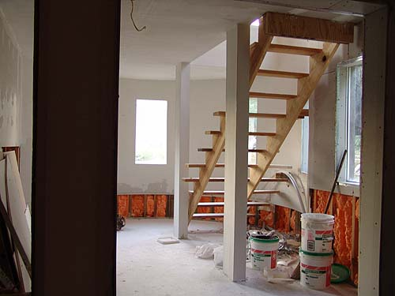
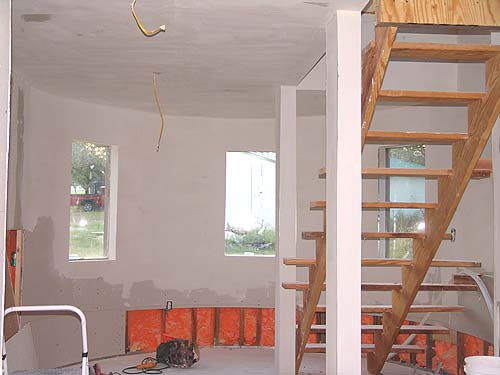
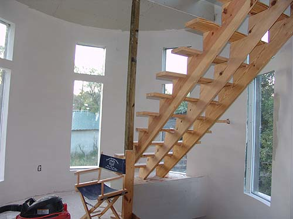
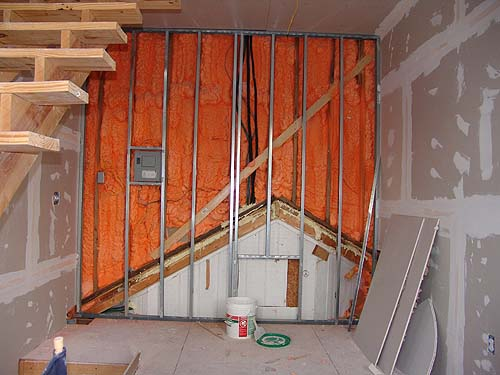
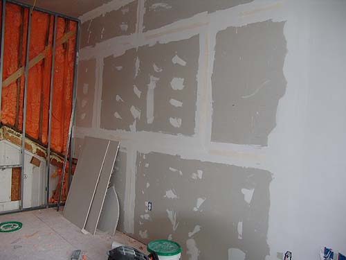
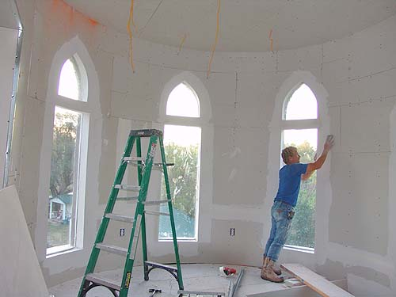

Interior work
Tape and bedding is moving
along quickly. The curved walls needed
the most work, and it looks like the ceilings
are the main thing left after the 3rd
floor.
George (the cat) feels the tower is
his play place. I can hear him running up and down the stairs all night.
On the back wall is the little air conditioning
unit we have. Notice the nice light patterns the arched windows give us
on the walls.

Starting on the bottom floor, as you
head into the tower from the kitchen. Column supports are in and all that's
left here is the lowest level of sheetrock and some final framing/sheetrock
between the old and new.

The rooms will be small, but there
should be room for a reading chair and lamp next to the window on the left.

The second floor curve is very
smooth. As I get time I'll start texturing the walls with the thicker old
world/castle look that we decided on.

We thought we'd be doing a built in
bookcase on my back wall. Here's the framing, but we'll just sheetrock
it for now until we get the more important things finished.

The first level of tape and bedding
for this wall. With the thick texture we plan, it doesn't need much more
than this.

And Lynn working on the third floor.
Taping and bedding, then sanding, then creating the curve of the tower
with more compound. Then a bit more sanding because it looks so neat when
it's that smooth.